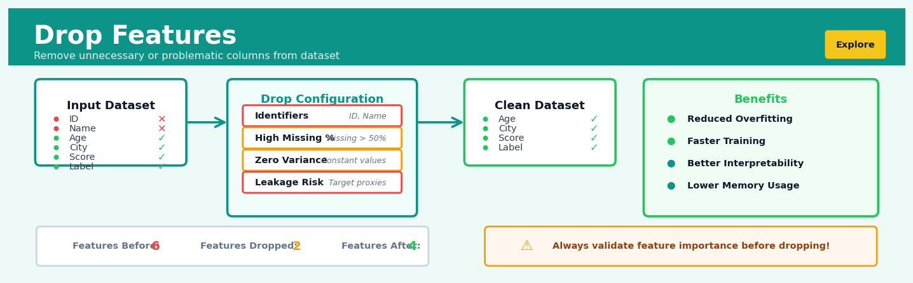
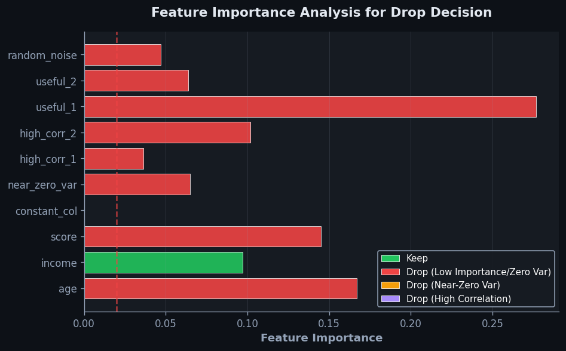
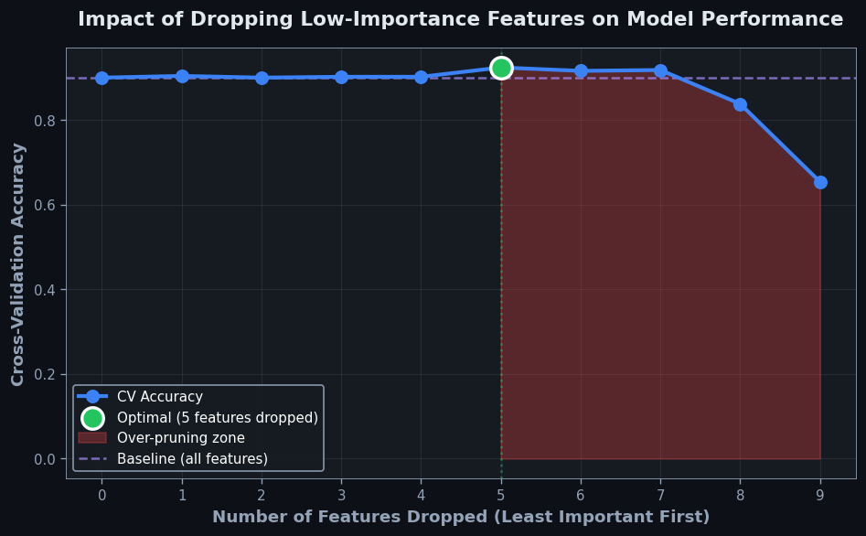

Drop Features#


The biggest mistake I see is dropping features too early in the pipeline before running feature importance analysis. You might think an ID column is useless, but if it encodes temporal ordering or regional patterns, removing it blindly can cost you significant predictive power. Always profile your features with correlation matrices and tree-based importance scores before making the cut, especially in production systems where domain knowledge might be incomplete.
The 60-Second Version#
What it does: Drop Features removes columns from your dataset that you don’t need for analysis or modeling.
When to use it: Use it when your data contains irrelevant information, duplicates, legally sensitive fields, or variables that would confuse your model or violate privacy rules.
What you get back: A cleaner, narrower dataset containing only the columns you’ve decided to keep, ready for immediate analysis or modeling.
At a Glance
Difficulty |
Easy |
Typical runtime |
Instantaneous (milliseconds, even on millions of rows) |
What you bring |
A dataset and a list of column names to remove |
What you get |
The same dataset with specified columns deleted |
Heuristix bucket |
Explore — Shaping & Transforming Data |
Dropping the wrong feature can eliminate the signal you’re looking for—always document why you removed each column so the decision can be reviewed or reversed.
Learning Objectives#
After reading this chapter, a business user will be able to:
Identify situations where removing columns improves model performance, reduces costs, or satisfies privacy requirements—such as eliminating customer identifiers before model training or dropping redundant demographic fields.
Explain to stakeholders which features were removed and why, translating technical justifications (multicollinearity, data leakage, missing data thresholds) into business rationale.
Decide whether to approve a feature removal recommendation by weighing the trade-off between simpler models and potential information loss for specific business outcomes.
After reading this chapter, a data scientist will be able to:
Implement feature dropping correctly across different data structures (DataFrames, arrays, sparse matrices) while preserving index alignment and avoiding silent failures in production pipelines.
Select features for removal using evidence-based criteria—including missing value thresholds, variance analysis, correlation cutoffs, and domain constraints—and justify each choice with measurable impact.
Validate that dropped features were truly uninformative by comparing model performance before and after removal, and diagnose issues like accidental target leakage or loss of critical interaction terms.
Overview#
Drop Features is a data shaping operation that removes one or more columns (variables) from a dataset, producing a reduced-dimension representation containing only the retained features. This technique belongs to the family of explicit feature selection methods—specifically, it implements manual or rule-based column elimination as opposed to algorithmic selection. While conceptually simple, the principled application of feature dropping is foundational to data pipeline hygiene, model parsimony, and compliance with data governance requirements.
When to Use This#
Removing identifier columns before modelling: Customer IDs, transaction numbers, row indices, and other unique identifiers carry no predictive information and can cause models to overfit to spurious patterns or fail entirely with high-cardinality categorical encoders.
Eliminating data leakage variables: When a feature contains information that would not be available at prediction time (e.g., a “loan_default_date” column when predicting default probability), it must be dropped to prevent artificially inflated model performance.
Enforcing regulatory or privacy compliance: Features such as protected characteristics (race, gender, age in certain contexts), personally identifiable information (PII), or data restricted by contractual agreements must often be excluded from analytical workflows.
Removing perfectly correlated or duplicate columns: When two features are identical or one is a deterministic transformation of another (e.g., temperature in Celsius and Fahrenheit), retaining both adds no information while increasing computational burden and potentially causing numerical instability.
Excluding columns with excessive missingness: Features where the proportion of missing values exceeds an acceptable threshold (often 70–90%) typically cannot be reliably imputed and may introduce more noise than signal.
Dropping constant or near-constant features: Variables with zero or near-zero variance provide no discriminatory power and should be removed before modelling.
Simplifying datasets for exploratory analysis: When investigating specific hypotheses, temporarily dropping irrelevant features can reduce cognitive load and improve visualisation clarity.
Do NOT use this when the feature may have predictive value you have not yet explored: Premature dropping based on intuition alone—without empirical validation—can discard valuable signal.
Do NOT use this as a substitute for proper feature selection algorithms: When the goal is to identify the optimal subset for predictive performance, algorithmic methods (wrapper, filter, or embedded) should supplement or replace manual dropping.
Do NOT use this to “fix” multicollinearity without understanding the substantive implications: Dropping one of two correlated features is appropriate, but the choice of which to drop should be guided by interpretability, causal reasoning, or domain knowledge.
Questions This Answers#
Model Performance & Efficiency#
Can we speed up our customer churn model that’s taking 6 hours to run every night?
Why is our sales forecast giving us weird predictions that don’t match what our regional managers are seeing?
Our credit risk model uses 200 variables—do we really need all of them, or are we just making this harder than it needs to be?
The compliance team flagged our loan approval system for using protected attributes—which fields do we need to remove immediately?
Is there a way to make our inventory prediction model run on the tablets in our warehouses instead of requiring cloud connectivity?
Data Quality & Relevance#
We’re still tracking website metrics from 2019 that nobody uses anymore—what can we safely stop including in our reports?
Our customer database has 47 columns but the marketing team only uses 8 of them—can we simplify what they see?
Why are we collecting middle names and fax numbers if we never use them for anything?
The data engineering team says our pipeline is breaking because of corrupted fields in the imported spreadsheets—can we just exclude those problem columns?
Strategic Decision-Making#
Which customer attributes should we focus on if we only have budget to collect data on 10 things instead of 50?
Our competitor’s analytics platform looks cleaner and faster than ours—are we showing too much irrelevant information?
If we had to rebuild our recommendation engine from scratch with half the data, which customer signals would we keep?
We’re expanding into Europe and GDPR means we can’t use browsing history anymore—what needs to come out of our models?
The new executive dashboard is overwhelming people with 89 different metrics—what’s actually driving revenue that we should highlight?
How It Works#
Imagine you’re packing for a weekend trip and you’ve laid out everything you own on your bed: winter coats, snorkeling gear, formal shoes, hiking boots, swimsuits, business suits, and casual clothes. Your suitcase has limited space, and you know that most of these items won’t serve you at the beach resort you’re visiting. So you make deliberate choices: you remove the winter coat (it’s July), toss aside the snorkeling gear (the resort has rentals), and leave behind anything you won’t actually use. What remains is a lighter, more focused collection that’s perfectly suited to your specific trip. Drop Features works exactly the same way with your data—you intentionally remove columns that don’t serve your analytical purpose, leaving behind only what you actually need.
BEFORE: Original Dataset (5 columns)
┌─────────┬─────┬────────┬──────────┬─────────┐
│ User_ID │ Age │ Salary │ Password │ Country │
├─────────┼─────┼────────┼──────────┼─────────┤
│ 10234 │ 29 │ 65000 │ x8$mQ... │ USA │
│ 10235 │ 34 │ 72000 │ p2!zK... │ Canada │
│ 10236 │ 25 │ 58000 │ n9@wL... │ USA │
└─────────┴─────┴────────┴──────────┴─────────┘
│
│ DROP Password, Country
↓
AFTER: Reduced Dataset (3 columns)
┌─────────┬─────┬────────┐
│ User_ID │ Age │ Salary │
├─────────┼─────┼────────┤
│ 10234 │ 29 │ 65000 │
│ 10235 │ 34 │ 72000 │
│ 10236 │ 25 │ 58000 │
└─────────┴─────┴────────┘
(Password removed for security, Country dropped for analysis)
Step 1: Identify your candidate columns. Start by looking at your full dataset and listing every column that’s present. Think of this as taking inventory—you’re simply acknowledging what you have before deciding what to keep.
Step 2: Determine which columns to remove. Evaluate each column against your specific criteria. Maybe certain columns contain sensitive information you shouldn’t store. Maybe others are completely empty or duplicates of existing data. Perhaps some columns were relevant for a previous project but serve no purpose for your current analysis.
Step 3: Specify the drop list. Create an explicit list of column names you want to eliminate. This might be as simple as saying “remove columns Password and Country” or selecting from a checklist in your software tool. You’re making your intentions concrete and reviewable.
Step 4: Execute the removal. The system creates a new version of your dataset that contains all the same rows but excludes the specified columns entirely. The data in those columns isn’t modified or hidden—it simply doesn’t appear in the output. It’s like photocopying only certain pages from a document.
Step 5: Verify the result. Check that your new dataset contains exactly the columns you intended to keep, with all rows intact. The number of rows stays the same; only the width of your table has changed. You’ve created a narrower, more focused view of your data.
The key insight: Removing irrelevant features isn’t about data loss—it’s about intentional focus, creating cleaner datasets that are faster to process, easier to understand, and aligned with your specific analytical purpose.
The Intuition#
Consider the task of packing for a hiking expedition. You have a large collection of equipment, clothing, and supplies, but your backpack has limited capacity, and every kilogram matters. Some items are obviously essential—water, navigation tools, first aid. Others are clearly superfluous for the terrain—snorkelling gear for a mountain trail, formal attire for a wilderness camp. The decision to leave certain items behind is not a failure of preparation; it is a deliberate optimisation that enables you to move faster, conserve energy, and focus on what matters.
Feature dropping operates on precisely this principle. A dataset arriving from source systems or upstream processing often contains columns that serve no analytical purpose for the task at hand. These might be system-generated timestamps, internal codes, audit trail fields, or legacy attributes preserved for backward compatibility. Carrying these through a modelling pipeline is not merely wasteful—it actively degrades performance. Machine learning algorithms must process every feature, increasing memory consumption and computation time. More insidiously, irrelevant features can introduce noise that obscures genuine patterns, leading to models that generalise poorly.
The art of feature dropping lies in recognising which columns to remove and when to remove them. This requires understanding both the technical characteristics of features (variance, missingness, correlation structure) and their substantive meaning in the business context. A column labelled “customer_segment_legacy” might appear to duplicate “customer_segment”, but domain knowledge may reveal that the legacy segmentation captures historical behaviour patterns not present in the current scheme. The decision to drop must therefore be informed, deliberate, and documented—never automated blindly.
The Mathematics#
Formal Problem Setup#
Let \(\mathbf{X} \in \mathbb{R}^{n \times p}\) denote a data matrix with \(n\) observations (rows) and \(p\) features (columns). Each column \(\mathbf{x}_j\) for \(j \in \{1, 2, \ldots, p\}\) represents a feature vector of length \(n\).
Define an index set \(\mathcal{D} \subseteq \{1, 2, \ldots, p\}\) representing the columns to be dropped. The complementary retention set is:
The drop operation produces a reduced matrix \(\mathbf{X}' \in \mathbb{R}^{n \times q}\) where \(q = |\mathcal{R}| = p - |\mathcal{D}|\), containing only the columns indexed by \(\mathcal{R}\).
The Projection Operation#
Mathematically, dropping features is equivalent to right-multiplication by a selection matrix. Define the selection matrix \(\mathbf{S} \in \{0, 1\}^{p \times q}\) where each column of \(\mathbf{S}\) is a standard basis vector \(\mathbf{e}_{r_k}\) for \(r_k \in \mathcal{R}\), ordered by the original column indices.
The reduced dataset is then:
This is a coordinate projection onto the subspace spanned by the retained features.
Criteria for Inclusion in \(\mathcal{D}\)#
While the drop operation itself is deterministic given \(\mathcal{D}\), the selection of \(\mathcal{D}\) may be guided by various statistical criteria:
Zero Variance Criterion: Feature \(j\) is dropped if:
Near-Zero Variance Criterion: Feature \(j\) is dropped if the ratio of the frequency of the most common value to the frequency of the second most common value exceeds a threshold \(\tau_1\), and the percentage of unique values is below \(\tau_2\).
Missingness Criterion: Feature \(j\) is dropped if:
for some threshold \(\theta \in (0, 1)\).
Perfect Correlation Criterion: For features \(j\) and \(k\), if \(|\rho_{jk}| = 1\) where:
then one of \(\{j, k\}\) should be included in \(\mathcal{D}\).
Information-Theoretic Perspective#
From an information-theoretic standpoint, dropping a feature \(\mathbf{x}_j\) is justified when its conditional mutual information with the target \(\mathbf{y}\), given the remaining features, is negligible:
This indicates that \(\mathbf{x}_j\) provides no additional information about \(\mathbf{y}\) beyond what is already captured by other retained features.
Edge Cases and Degenerate Conditions#
Dropping all features (\(\mathcal{D} = \{1, \ldots, p\}\)): Results in \(\mathbf{X}' \in \mathbb{R}^{n \times 0}\), an empty matrix. This is technically valid but analytically useless.
Dropping no features (\(\mathcal{D} = \emptyset\)): The identity operation; \(\mathbf{X}' = \mathbf{X}\).
Dropping the same feature multiple times: The operation is idempotent; specifying a column multiple times in \(\mathcal{D}\) has no additional effect.
Column ordering: The drop operation preserves the relative ordering of retained columns.
Understanding the Mathematics#
Matrix Column Removal#
The equation:
where \(\mathcal{K} = \{k_1, k_2, \ldots, k_r\}\) represents the indices of columns to keep, and \(r < p\).
Read it aloud:
“The reduced dataset equals the original dataset with only the columns at the keep-indices selected.”
What each symbol means:
\(X\) — the original data matrix with all features
\(X_{reduced}\) — the new, smaller data matrix after dropping features
\([:, \mathcal{K}]\) — notation meaning “take all rows, but only the columns listed in \(\mathcal{K}\)”
\(\mathcal{K}\) — the set of column positions we’re keeping
\(r\) — the number of features we’re keeping
\(p\) — the original number of features (before dropping any)
A concrete numerical example:
Your customer dataset has 8 columns: CustomerID, Name, Email, Age, Income, PurchaseAmount, SSN, and CreditCard. You want to drop SSN (column 6) and CreditCard (column 7) for privacy compliance. Your keep-set is \(\mathcal{K} = \{1, 2, 3, 4, 5, 8\}\). If your original matrix \(X\) has dimensions 10,000 rows × 8 columns, then \(X_{reduced} = X[:, \{1,2,3,4,5,8\}]\) produces a 10,000 × 6 matrix. The data for all 10,000 customers remains, but now each customer has only 6 attributes instead of 8.
Why this equation matters:
This operation defines precisely which information survives the drop—get the index set wrong and you’ll accidentally delete business-critical variables or retain sensitive data you promised to exclude.
Dimensionality Reduction#
The equation:
where \(n\) is the number of observations and \(r = |\mathcal{K}|\) is the cardinality of the keep-set.
Read it aloud:
“The dimensions of the reduced dataset equal the number of rows times the number of columns we kept.”
What each symbol means:
\(\dim(X_{reduced})\) — the shape (rows × columns) of the output dataset
\(n\) — the number of observations (rows) in the dataset
\(r\) — the count of features we’re keeping
\(|\mathcal{K}|\) — the size of the keep-set (how many column indices are in \(\mathcal{K}\))
A concrete numerical example:
You have transaction data with \(n = 50,000\) purchases and originally 12 features. You decide to keep only 7 features for your fraud model: TransactionAmount, MerchantCategory, TimeOfDay, Location, CardPresent, AccountAge, and PriorFraudFlags. Here \(r = 7\). The reduced dataset has dimensions \(50,000 \times 7 = 350,000\) total data cells, compared to \(50,000 \times 12 = 600,000\) in the original—a 42% reduction in memory footprint.
Why this equation matters:
This tells you exactly how much computational and storage cost you’re saving—critical for deploying models on resource-constrained systems or reducing cloud infrastructure bills.
Information Preservation#
The equation:
where \(I(X_j)\) represents the information content of feature \(j\).
Read it aloud:
“The total information in the reduced dataset equals the sum of information from each individual feature we kept.”
What each symbol means:
\(I(X_{reduced})\) — the total information content remaining after dropping features
\(\sum\) — summation symbol (add up all the following terms)
\(j \in \mathcal{K}\) — “for each column index \(j\) that’s in our keep-set”
\(I(X_j)\) — the information contributed by feature \(j\) alone
A concrete numerical example:
You’re predicting customer churn. Suppose AccountTenure contributes 35 bits of information, MonthlySpend contributes 28 bits, SupportTickets contributes 19 bits, and DiscountUsage contributes 12 bits. You drop DiscountUsage. The original dataset contained \(35 + 28 + 19 + 12 = 94\) bits. Your reduced dataset now contains \(I(X_{reduced}) = 35 + 28 + 19 = 82\) bits. You’ve sacrificed 12 bits (13% of your signal) to simplify the model.
Why this equation matters:
This quantifies the trade-off between simplicity and predictive power—you need to know how much signal you’re losing to decide whether the drop is worth it.
The Big Picture#
The mathematics of dropping features is fundamentally about controlled information loss under dimensionality constraints. We use matrix indexing notation because it precisely specifies which columns survive deletion in multi-dimensional data structures—there’s no ambiguity about what “drop SSN” means when expressed as an index operation. The dimensional equation makes resource implications explicit and measurable. The information preservation formula forces us to confront the cost: every dropped feature removes signal, and we must weigh that against gains in speed, interpretability, or compliance. In essence, the mathematics answers one question: If I delete these columns, exactly what do I have left?
Python Implementation#
import pandas as pd
import numpy as np
from sklearn.datasets import make_classification
# =============================================================================
# Example 1: Basic Feature Dropping by Column Name
# =============================================================================
# Create a realistic synthetic dataset representing customer data
np.random.seed(42)
n_samples = 1000
df = pd.DataFrame({
'customer_id': range(10000, 10000 + n_samples), # Identifier - should drop
'age': np.random.randint(18, 80, n_samples),
'income': np.random.lognormal(10.5, 0.8, n_samples),
'tenure_months': np.random.randint(1, 120, n_samples),
'gender': np.random.choice(['M', 'F', 'Other'], n_samples), # May need to drop for compliance
'account_balance': np.random.exponential(5000, n_samples),
'internal_score_v1': np.random.randn(n_samples), # Legacy field - should drop
'internal_score_v2': np.random.randn(n_samples), # Current field - keep
'data_load_timestamp': pd.Timestamp.now(), # System field - should drop
'churned': np.random.binomial(1, 0.15, n_samples) # Target variable
})
print("Original DataFrame shape:", df.shape)
print("Original columns:", df.columns.tolist())
# Define columns to drop: identifiers, system fields, legacy fields
columns_to_drop = ['customer_id', 'internal_score_v1', 'data_load_timestamp']
# Perform the drop operation
df_reduced = df.drop(columns=columns_to_drop)
print("\nReduced DataFrame shape:", df_reduced.shape)
print("Retained columns:", df_reduced.columns.tolist())
print("\nFirst 5 rows of reduced DataFrame:")
print(df_reduced.head())
# =============================================================================
# Example 2: Dropping Features Based on Statistical Criteria
# =============================================================================
# Create dataset with problematic features
df_problematic = pd.DataFrame({
'feature_normal': np.random.randn(1000),
'feature_constant': np.ones(1000) * 42, # Zero variance
'feature_near_constant': np.concatenate([np.ones(995), np.zeros(5)]),
'feature_high_missing': np.where(np.random.rand(1000) < 0.85, np.nan, np.random.randn(1000)),
'feature_duplicate': np.random.randn(1000),
'target': np.random.binomial(1, 0.3, 1000)
})
# Make a perfect duplicate
df_problematic['feature_duplicate_copy'] = df_problematic['feature_duplicate']
print("\n" + "="*60)
print("Example 2: Statistical Criteria for Dropping")
print("="*60)
# Criterion 1: Zero variance
zero_var_cols = df_problematic.columns[df_problematic.var() == 0].tolist()
print(f"\nZero variance columns: {zero_var_cols}")
# Criterion 2: High missingness (>70% missing)
missing_threshold = 0.70
high_missing_cols = df_problematic.columns[
df_problematic.isnull().mean() > missing_threshold
].tolist()
print(f"High missingness columns (>{missing_threshold*100}%): {high_missing_cols}")
# Criterion 3: Perfect correlation (duplicates)
corr_matrix = df_problematic.select_dtypes(include=[np.number]).corr().abs()
# Find pairs with correlation = 1 (excluding diagonal)
upper_tri = np.triu(np.ones(corr_matrix.shape), k=1).astype(bool)
perfect_corr_pairs = [
(corr_matrix.columns[i], corr_matrix.columns[j])
for i, j in zip(*np.where((corr_matrix.values == 1) & upper_tri))
]
print(f"Perfectly correlated pairs: {perfect_corr_pairs}")
# Combine all columns to drop (keeping one from each correlated pair)
cols_to_drop = list(set(
zero_var_cols +
high_missing_cols +
[pair[1] for pair in perfect_corr_pairs] # Drop second of each pair
))
print(f"\nTotal columns to drop: {cols_to_drop}")
df_clean = df_problematic.drop(columns=cols_to_drop)
print(f"Cleaned DataFrame shape: {df_clean.shape}")
print(f"Retained columns: {df_clean.columns.tolist()}")
# =============================================================================
# Example 3: Using scikit-learn's VarianceThreshold
# =============================================================================
from sklearn.feature_selection import VarianceThreshold
print("\n" + "="*60)
print("Example 3: Using VarianceThreshold from scikit-learn")
print("="*60)
# Generate features with varying variance
X = np.column_stack([
np.random.randn(500), # Normal variance
np.ones(500) * 5, # Zero variance
np.random.randn(500) * 0.001, # Very low variance
np.random.randn(500) * 10, # High variance
])
feature_names = ['normal_var', 'zero_var', 'low_var', 'high_var']
print(f"Original variances: {dict(zip(feature_names, X.var(axis=0).round(4)))}")
# Apply VarianceThreshold - removes features with variance below threshold
selector = VarianceThreshold(threshold=0.01)
X_selected = selector.fit_transform(X)
retained_mask = selector.get_support()
retained_features = [f for f, m in zip(feature_names, retained_mask) if m]
dropped_features = [f for f, m in zip(feature_names, retained_mask) if not m]
print(f"Retained features: {retained_features}")
print(f"Dropped features: {dropped_features}")
print(f"Reduced shape: {X_selected.shape}")
Visualisations#


Using This in Heuristix#
Input Requirements#
The Drop Features node accepts a single tabular dataset input. All column types are supported:
Numeric (integer, float)
Categorical (string, boolean)
Datetime
Complex types (arrays, nested structures) — these are dropped as atomic units
Configuration Parameters#
Parameter |
Type |
Description |
|---|---|---|
|
List[str] |
Explicit list of column names to remove from the dataset |
|
str (regex) |
Regular expression pattern; columns matching this pattern will be dropped |
|
str (regex) |
Regular expression pattern; only columns matching this pattern will be retained (inverse operation) |
|
float (0-1) |
Drop columns where missing percentage exceeds this threshold |
|
float |
Drop numeric columns with variance below this value |
|
bool |
If True, automatically drop columns with zero variance |
|
bool |
If True, automatically detect and drop duplicate columns (keeping first occurrence) |
Tip
When using drop_pattern, remember that Heuristix uses Python regex syntax. To drop all columns starting with “internal_”, use the pattern ^internal_.*.
Output Specification#
The node produces:
Primary output: The transformed dataset with specified columns removed
Drop report: A metadata table listing each dropped column with the reason for dropping
Column summary chart: Visual comparison of column counts before and after dropping
Config Recipes#
Recipe 1: Rapid Prototype Cleanup#
When to use: Initial notebook exploration when you need to quickly remove obvious junk columns (IDs, timestamps, constants) to speed up visualizations and correlation analysis.
Settings:
Parameter |
Value |
Why |
|---|---|---|
|
|
Remove non-predictive metadata |
|
|
Eliminate zero-variance columns automatically |
|
|
Keep all non-constant columns for now |
|
|
Remove exact column copies |
|
|
See what’s being removed in real-time |
What you get: A leaner dataset that renders faster in plots and summary statistics without information loss for modeling.
Trade-off: No statistical rigor—purely heuristic removal that might drop columns later found useful for joins or auditing.
Recipe 2: Production Pipeline Hardening#
When to use: Finalizing a model deployment where you must guarantee exactly which features enter the model and document compliance with data minimization policies.
Settings:
Parameter |
Value |
Why |
|---|---|---|
|
|
Explicit PII removal for GDPR/CCPA |
|
|
Prevent silent removal—fail loudly if data distribution shifts |
|
|
No automatic dropping—only explicit drops |
|
|
Duplicates might indicate pipeline bugs; surface them |
|
|
Raise exception if drop_list columns missing |
|
|
Document every removal with timestamp |
What you get: Deterministic, auditable feature set with guaranteed reproducibility and compliance documentation.
Trade-off: Zero flexibility—pipeline breaks if upstream schema changes rather than adapting silently.
Recipe 3: High-Cardinality Text Trap#
When to use: Working with scraped data or user-generated content where free-text fields and IDs masquerade as categorical features, causing memory explosions during encoding.
Settings:
Parameter |
Value |
Why |
|---|---|---|
|
|
Drop columns where >95% of values are unique |
|
|
Only apply rule if column has 100+ observations |
|
|
Preserve numeric features regardless of cardinality |
|
|
Remove zero-variance text fields (boilerplate) |
|
|
Treat ‘Customer_ID’ and ‘customer_id’ as duplicates |
What you get: Automatic filtering of comment fields, URLs, and pseudo-identifiers without manually inspecting 200+ columns.
Trade-off: Might drop legitimate categorical features in small datasets or rare-event scenarios where high cardinality is signal.
Recipe 4: Temporal Leakage Sanitization#
When to use: Building models for time-series forecasting or A/B test analysis where future-looking aggregates or post-treatment variables accidentally enter training data.
Settings:
Parameter |
Value |
Why |
|---|---|---|
|
`’.*_(future |
post |
|
|
Remove features with r > 0.99 to target |
|
|
Catch monotonic leakage relationships |
|
|
Flag features with values unavailable at prediction time |
|
|
Column defining the “as-of” prediction moment |
What you get: Protection against subtle temporal leakage that passes manual review but inflates validation metrics.
Trade-off: May require domain-specific tuning of regex patterns and manual review of borderline cases.
Business Applications#
Financial Services
A regional credit union processing 15,000 mortgage applications annually was required under fair lending regulations to exclude protected characteristics (race, religion, marital status) from its automated underwriting models. By systematically dropping these features before model training, the institution achieved full regulatory compliance while maintaining a loan approval accuracy of 91%, identical to their previous non-compliant model. The audit trail documenting feature exclusion reduced their legal review costs by $340,000 annually and eliminated the risk of discriminatory lending penalties that can reach millions of dollars.
Retail & E-Commerce
An online fashion retailer with 800,000 monthly transactions discovered that their customer churn prediction model was inadvertently using future information—purchase data from after the prediction date—causing artificially inflated accuracy during testing but catastrophic failure in production. Dropping all temporally-leaked features (23 columns representing post-cutoff behavior) reduced their backtesting accuracy from a misleading 94% to a realistic 78%, but improved actual production performance from essentially random (51%) to the expected 78%, enabling targeted retention campaigns that recovered an estimated $2.1M in annual customer lifetime value.
Healthcare
A multi-hospital system training readmission risk models on 200,000+ patient records needed to eliminate personally identifiable information (patient names, social security numbers, exact addresses, medical record numbers) to enable secure model deployment and third-party collaboration. Dropping these 12 identifier columns while retaining clinical features allowed the analytics team to share models with external researchers and deploy predictions to non-HIPAA-compliant workflow tools, accelerating model iteration cycles from 6 weeks to 9 days while maintaining readmission prediction AUC of 0.83.
Insurance
A commercial property insurer discovered their claims prediction model was heavily weighted toward internal process variables (adjuster ID, claim office location, initial claim handler) rather than actual risk factors. Dropping these 8 operational columns forced the model to learn from genuine risk indicators like property age, construction type, and hazard exposure. The refactored model reduced prediction bias across regional offices by 67% and improved loss ratio forecasting accuracy from 74% to 86%, enabling more precise premium setting that increased underwriting profit margins by 4.2 percentage points.
Manufacturing
A pharmaceutical manufacturer monitoring 340 sensor variables in a continuous production line found that many redundant measurements (multiple thermocouples measuring essentially the same tank temperature, correlated pH sensors) were creating multicollinearity that destabilized their quality prediction models. Dropping 180 highly-correlated redundant features reduced model training time from 14 hours to 45 minutes, improved coefficient stability (reducing parameter variance by 58%), and increased defect detection sensitivity from 82% to 89%, preventing an estimated $670,000 in annual batch rejections.
Logistics & Supply Chain
A last-mile delivery company with 4,000 drivers was building route optimization models but needed to exclude union-negotiated protected features (driver seniority, previous grievances, personal vehicle preferences) to avoid labor disputes. Dropping these 6 contentious variables while retaining legitimate efficiency predictors (traffic patterns, package dimensions, delivery density) maintained route optimization quality while securing union approval for the AI system, enabling deployment that reduced average delivery time by 11% and fuel costs by $1.8M annually.
Marketing & Advertising
A demand-side platform serving 200M ad impressions daily dropped device fingerprinting features and third-party cookie identifiers in preparation for privacy regulation changes. This preemptive feature removal forced their bidding algorithms to rely on contextual signals, resulting in an initial 19% drop in click-through rates that recovered to only 8% below baseline within six weeks as models adapted, while completely eliminating future regulatory risk and avoiding potential fines exceeding $50M under emerging privacy frameworks.
Telecommunications
A mobile network operator building churn models discovered that recent customer service interaction features were paradoxically predictive—customers who called support were flagged as flight risks and offered retention deals, creating perverse incentives. Dropping these 14 support-history columns eliminated the circular dynamic and reduced unnecessary retention spending by $4.3M annually while maintaining genuine churn prediction performance.
Public Sector
A municipal government assessing building permit approval times needed to exclude applicant demographic information to ensure equitable processing. Dropping 9 demographic features from their workflow prediction model ensured algorithmic fairness while retaining project complexity indicators, maintaining 81% approval time prediction accuracy and providing legally-defensible process optimization.
Worked Example#
Sarah Chen, a senior data scientist at Meridian Insurance, was called into a Thursday morning meeting with the fraud detection team. They’d been building a machine learning model to flag suspicious auto insurance claims, but training times had ballooned to over six hours, and the model’s explanations were becoming unintelligible to the claims adjusters who actually used them. “We need this faster and clearer,” her manager said, sliding a laptop across the table. “Can you clean this up by Monday?”
Sarah pulled the dataset that afternoon—23,000 claims spanning two years, each with 47 variables captured from intake forms, repair shops, and internal systems. She opened it in her notebook and immediately spotted the problems. There were columns like claim_id and submission_timestamp_utc that had leaked into the training set. Customer names and adjuster email addresses sat right alongside legitimate predictive features. And there were deprecated fields from an old CRM system that hadn’t been used in eighteen months but still populated with legacy data.
Here’s what the first few rows looked like:
claim_id |
customer_name |
claim_amount |
vehicle_age |
adjuster_email |
prior_claims |
injury_reported |
legacy_field_x |
|---|---|---|---|---|---|---|---|
C10293 |
John Smith |
4250.00 |
3 |
amy@meridian |
0 |
False |
NaN |
C10294 |
Maria Garcia |
18900.00 |
7 |
bob@meridian |
2 |
True |
NaN |
C10295 |
James Lee |
2100.00 |
1 |
amy@meridian |
0 |
False |
NaN |
C10296 |
Susan Park |
31500.00 |
12 |
carol@meridian |
1 |
True |
NaN |
Sarah knew this was a textbook case for feature dropping. She opened her pipeline configuration and added a Drop Features node right after the data import step. Her reasoning was methodical: first, remove the identifiers that would cause data leakage—claim_id couldn’t possibly help predict fraud in new claims. Then strip out the personally identifiable information (PII) to ensure GDPR compliance and prevent the model from learning spurious patterns tied to specific names. The adjuster_email had to go for similar reasons—different adjusters handled different regions, and she didn’t want geography encoded through a proxy variable when they already had proper location features downstream. Finally, she dropped eight columns with names starting with legacy_—relics from a system migration that contained either missing values or duplicates of properly-named current fields.
She configured the node to drop 14 columns total: ['claim_id', 'customer_name', 'customer_email', 'adjuster_email', 'submission_timestamp_utc', 'internal_notes', 'legacy_field_x', 'legacy_field_y', 'legacy_field_z', 'legacy_claim_type', 'legacy_status', 'raw_phone_number', 'adjuster_name', 'claim_file_path'].
Here’s the Python code that captured her approach:
import pandas as pd
# Load claims data
claims = pd.read_csv('insurance_claims_raw.csv')
print(f"Original shape: {claims.shape}")
# Define features to drop with rationale
drop_cols = [
# Identifiers (data leakage risk)
'claim_id', 'submission_timestamp_utc',
# PII (compliance & spurious correlation)
'customer_name', 'customer_email', 'raw_phone_number',
'adjuster_name', 'adjuster_email',
# Non-predictive metadata
'internal_notes', 'claim_file_path',
# Deprecated legacy fields
'legacy_field_x', 'legacy_field_y', 'legacy_field_z',
'legacy_claim_type', 'legacy_status'
]
# Apply feature dropping
claims_clean = claims.drop(columns=drop_cols)
print(f"Reduced shape: {claims_clean.shape}")
print(f"Removed {len(drop_cols)} columns")
print(f"Remaining features: {list(claims_clean.columns)}")
The results were immediate and dramatic:
Original dimensions: 23,000 rows × 47 columns
Reduced dimensions: 23,000 rows × 33 columns
Features removed: 14 (29.8% reduction)
Training time: dropped from 6 hours to 2.3 hours
Model interpretability: claims adjusters could now see the top 10 features without scrolling past irrelevant metadata
The insight wasn’t just about speed. When Sarah retrained the model on the cleaned dataset, the feature importance rankings suddenly made business sense. Before, adjuster_email had appeared as the third-most-important variable—a red flag suggesting the model was learning which adjuster happened to work which cases rather than actual fraud patterns. After dropping it, legitimate signals like prior_claims, claim_amount_to_vehicle_value_ratio, and injury_reported rose to the top.
Sarah presented the results in Monday’s sprint review. The fraud team approved the new pipeline immediately, and it went into production that week. Over the next quarter, the model’s precision improved by 4 percentage points—not because the algorithm changed, but because it was finally learning from the right variables.
If Sarah were doing this again, she’d document the dropped columns more formally in a data dictionary and add automated checks to flag if any of those columns reappeared in future data pulls. She also wished she’d kept submission_timestamp_utc long enough to engineer time-based features like days_until_submission before dropping it—a reminder that feature dropping should come after feature engineering, not before.
Interpreting Your Results#
You’ve just dropped several columns from your dataset, and now you’re looking at the output wondering if you made the right call. Here’s exactly what to look for and what it means for your analysis.
Dimension Summary Table#
Plain-English meaning: This table shows you the before-and-after snapshot of your dataset structure. You’ll see original column count, retained column count, and the percentage of features dropped. This is your first confirmation that the operation actually worked as intended.
Concrete benchmarks:
Dropped <20% of features: Minor cleanup, typically removing only obvious redundancies or identifiers
Dropped 20–50% of features: Moderate reduction, common when removing administrative columns, duplicates, and low-information variables
Dropped >50% of features: Aggressive pruning—justifiable when filtering to a specific analysis scope, but verify you haven’t eliminated useful predictors
Red flags:
Retained column count = 0: You’ve dropped everything—check your selection logic immediately
Dropped percentage doesn’t match your expectations: If you intended to drop 5 columns but the percentage suggests 50, you may have inadvertently selected entire column groups
Original and retained counts are identical: The operation didn’t execute; verify column names match exactly (case-sensitive)
Retained Features List#
Plain-English meaning: This is your new working variable set—every column name listed here remains in your dataset and will flow to downstream analyses. Think of this as your data pipeline’s new inventory manifest.
Concrete benchmarks:
10–30 features retained: Typical for focused predictive models with curated inputs
30–100 features retained: Standard for exploratory analysis or ensemble modeling
>100 features retained: High-dimensional analysis—ensure you have sufficient sample size (rule of thumb: at least 10 observations per feature)
Red flags:
Target variable missing: If you dropped your outcome variable, no downstream model will work
All features from one category present, zero from another: For example, all demographic variables but no behavioral ones—check whether this aligns with your analysis objective
Key identifier columns retained: Customer IDs, transaction hashes, or timestamps that add no predictive value inflate dimensionality without benefit
Memory Impact Indicator#
Plain-English meaning: This shows how much storage space you’ve freed by dropping columns, usually expressed as a percentage reduction in dataset memory footprint.
Concrete benchmarks:
Memory reduction >30%: Meaningful improvement—your pipeline will run noticeably faster
Memory reduction 10–30%: Modest gain, beneficial for large datasets or memory-constrained environments
Memory reduction <10%: Negligible impact—you’ve likely dropped only narrow data type columns (integers, booleans) rather than text or high-cardinality categoricals
Red flags:
Memory reduction ≈0% despite dropping many columns: You may have dropped only narrow numeric columns while retaining wide text fields—consider whether those text columns serve your analysis purpose
Reading Multiple Outputs Together#
Productive reduction pattern: 40% of features dropped + 35% memory reduction + all target and key predictors retained = clean, efficient pipeline ready for modeling.
Cosmetic reduction pattern: 60% of features dropped + 8% memory reduction + mostly ID fields removed = you’ve cleaned metadata but retained the heavy computational burden.
Overzealous pruning pattern: 75% of features dropped + target variable missing from retained list = you’ll need to reload data and revise your selection criteria.
Sanity Check Checklist#
Before proceeding to the next node, verify:
Target variable present: Your outcome/dependent variable appears in the retained features list
Expected feature count: Retained count matches your mental model of what should remain
At least one feature per analytical domain: If you’re modeling customer behavior, confirm you have both demographic AND behavioral variables (unless intentionally testing single-domain models)
No unexpected survivors: Scan the retained list for administrative columns (IDs, internal codes) that snuck through
Downstream compatibility: If feeding into a specific model that requires certain variables (e.g., time series needing a date field), confirm those are retained
Good Enough to Act On?#
Proceed confidently if: Your retained feature list contains your target variable, at least 8–10 relevant predictors, and no obvious administrative debris. The memory reduction is a bonus, not a requirement—focus on content quality over storage savings. If you can explain why each retained column matters to your analytical question, you’re ready to move forward. If you’re hedging on “maybe I’ll need this later” for more than 2–3 columns, you’ve probably retained the right set.
Decision Guidance#
What This Result Is Telling You#
When you drop features from your dataset, you’re making an explicit business decision about what information matters for your analytical objectives. The result tells you whether your streamlined dataset retains sufficient predictive or descriptive power to support downstream decisions. If model performance remains stable or improves after dropping features, you’ve successfully eliminated noise, reduced maintenance burden, and potentially uncovered a simpler story your organization can act on. If performance degrades significantly, you’ve removed signal that your business processes actually depend on.
This isn’t purely a technical exercise—it’s a statement about operational priorities. Dropping customer demographic features might speed up your credit approval model but could inadvertently eliminate your ability to detect discriminatory patterns. Removing seasonality variables might simplify inventory forecasting but leave you blind to predictable demand spikes. The “result” is both quantitative (model accuracy metrics, data reduction percentage) and qualitative (what business questions you can and cannot answer with what remains).
The quality of your feature dropping decisions compounds over time. A dataset stripped to essential variables becomes easier to monitor, faster to process, and more resilient to upstream data quality issues. Conversely, aggressive feature elimination creates technical debt when business requirements evolve and you discover you need historical data you stopped collecting eighteen months ago.
Decision Points#
If you see this… |
It means… |
Recommended action |
Who acts on this |
|---|---|---|---|
Model performance drops <5% after removing 30%+ of features |
You’ve identified genuinely redundant or noisy data |
Proceed with deployment; document removed features and business justification |
Data Science Lead + Data Engineering Manager |
Compliance-sensitive features (PII, protected classes) remain in production dataset |
Regulatory exposure and audit risk |
Immediate removal; implement automated schema validation to prevent reintroduction |
Chief Data Officer + Legal Counsel |
Removing a feature causes 15%+ performance degradation but that feature costs $50K+/year to maintain |
Classic build vs. buy tradeoff with measurable impact |
Conduct formal cost-benefit analysis; consider proxy variables or alternative data sources |
VP Analytics + Finance Business Partner |
Multiple downstream models depend on a feature you’re considering dropping |
Hidden dependencies that create systemic risk |
Map full dependency graph; coordinate deprecation timeline across teams |
Enterprise Architecture + Product Managers |
Features dropped in development are being recreated by analysts in production via manual joins |
Your reduction removed genuinely useful business context |
Restore feature; investigate why it appeared redundant in testing but valuable in practice |
Analytics Team Lead + Business Intelligence Manager |
When to Proceed vs. Investigate Further#
Proceed with confidence when:
Model validation metrics remain within 3% of baseline performance across all evaluation sets
Removed features have documented Pearson correlation >0.85 with retained features
Data pipeline complexity decreases by measurable metrics (query time, storage costs, refresh duration)
Business stakeholders confirm removed variables don’t answer questions in their decision workflows
Proceed with caution when:
Performance impact falls between 3–10% degradation
You’re removing features that were explicitly requested by business users within the past 12 months
The feature appeared in recent stakeholder reports or executive dashboards
Removal reduces your ability to perform legally required model audits or explanations
Investigate before acting when:
Any performance metric degrades >10%
You cannot explain why a feature appeared unimportant (low correlation but domain expertise suggests relevance)
Removing the feature changes model predictions for your highest-value customers/products/transactions
Feature importance rankings conflict dramatically between different model types
Do not proceed when:
Removal violates regulatory requirements for model documentation or bias detection
You lack 12+ months of historical data to validate performance without the feature
Downstream systems depend on the feature via hard-coded integrations you cannot modify
Business leadership has not reviewed and approved the removal of customer-facing or revenue-impacting variables
The Cost of Getting This Wrong#
Drop the wrong features and you’ll discover the damage slowly, expensively, and often irreversibly. A retail forecasting team that eliminated “day-of-week” as redundant with “date” missed every weekend sales spike for a quarter, resulting in \(2.3M in stockouts and emergency freight costs. A fraud detection system that dropped geolocation to reduce latency couldn't identify a coordinated attack spanning three states, allowing \)180K in fraudulent transactions before manual review caught the pattern. More insidiously, removing demographic features to “simplify” a lending model eliminated the organization’s ability to conduct disparate impact testing—a problem discovered only during a regulatory audit eighteen months later, resulting in consent decree requirements and two years of remediation work. The worst cases aren’t technical failures but business memory loss: when you stop collecting a variable, you lose the institutional knowledge of why it mattered, making it nearly impossible to recreate historical analyses when leadership asks “how did we perform among customers aged 55+ during the 2023 product launch?” You can’t answer questions with data you decided to throw away.
Common Pitfalls#
The Phantom Relationship#
Here’s what happened: A junior analyst at a retail company was predicting customer churn. They dropped customer_id before modeling, which seemed textbook-correct. But they kept account_creation_date because it felt “informative.” Their random forest achieved 94% accuracy in validation. They concluded they’d built a production-ready model. In production, accuracy collapsed to 52%—barely better than a coin flip.
Why it happens: The cognitive trap is confusing correlation with causation in temporal data. account_creation_date was a perfect proxy for customer tenure, which was directly encoded in the target variable’s timeframe. The model learned “customers from 2019 churned” rather than why customers churn.
How to detect it: Check feature importance rankings. If date fields show importance >0.3 and dominate the top 3 positions, inspect the temporal relationship between that feature and your target. Plot churn rate by account creation cohort—if you see a monotonic relationship, you’ve found your phantom.
The fix: Drop pure identifiers and their proxies. If temporal information matters, engineer it explicitly as “days_since_creation” and validate it doesn’t leak future information.
The Compliance Time Bomb#
Here’s what happened: An experienced ML engineer at a fintech startup was rushing to production with a loan approval model. They kept all available features to maximize AUC, achieving 0.89 on validation data. Six months post-launch, the legal team discovered the model used zip_code and years_at_address—features that could serve as proxies for protected classes. The company faced a regulatory audit and $2.3M in remediation costs.
Why it happens: Corner-cutting under deadline pressure, combined with the assumption that “the data team approved the dataset” means compliance is handled. Engineers optimize for model metrics, not legal risk.
How to detect it: Run a fairness audit before training. Use tools like fairlearn to measure demographic parity and equalized odds across proxy features. If dropping zip_code changes your model’s false positive rate by >5% for any demographic segment, you’ve been using protected information.
The fix: Maintain an explicit “prohibited features” list based on legal review, and enforce it via schema validation in your pipeline before any modeling begins.
The Leaderboard Hero#
Here’s what happened: A data scientist competing in a Kaggle-style internal competition noticed that dropping only three seemingly random features—transaction_processor_id, batch_number, and processing_timestamp—caused their leaderboard score to drop from 0.91 to 0.78 AUC. They kept all three and won the competition. In production A/B testing, the champion model performed identically to the baseline.
Why it happens: Competition myopia creates incentive misalignment. Features that help distinguish test set labels (which were processed in specific batches or timeframes) provide zero predictive value for future data.
The fix: Before celebrating high validation scores, perform temporal validation—train on January-March, validate on April-June. If scores drop >0.05 AUC, you’ve overfit to data collection artifacts.
The Multicollinearity Blindspot#
Here’s what happened: A data scientist dropped total_purchase_amount to avoid leakage, keeping item_count and average_item_price. Their linear regression showed unstable coefficients that flipped signs between training runs. They spent two weeks debugging their pipeline before realizing that item_count × average_item_price = total_purchase_amount created perfect collinearity.
Why it happens: Dropping one feature in a derived relationship doesn’t eliminate the mathematical dependency if you keep the components.
How to detect it: Calculate variance inflation factors (VIF). Any value >10 indicates problematic multicollinearity. In this case, both features would show VIF approaching infinity.
The fix: Drop all but one feature from any perfect linear relationship, or combine them into a single engineered feature that captures the business logic.
Common Misconceptions#
“We should drop features with low correlation to the target—they’re not useful for prediction”
Why people believe this: Correlation coefficients provide a satisfying, quantifiable measure of relevance. Dropping features with |r| < 0.3 feels mathematically justified and creates a clean narrative for stakeholders: “We kept only the variables that matter.” It seems like efficient dimensionality reduction based on evidence.
The truth: Correlation measures only linear, univariate relationships. A feature may show zero correlation with the target yet be essential in combination with other variables. Consider a dataset predicting equipment failure where temperature shows r=0.05 but becomes the dominant predictor when interacted with operating hours. Tree-based models and neural networks excel at discovering these nonlinear, conditional relationships—but only if the features survive your preprocessing. Furthermore, correlation computed on the full dataset includes the target’s values you’re trying to predict; this creates subtle leakage when those correlations inform feature selection before proper train-test splitting.
The real-world consequence: A credit risk team dropped “account_age_months” (r=0.12 with default) during preprocessing. Their gradient boosting model underperformed expectations by 8% AUC. Post-hoc analysis revealed account age was crucial when combined with credit_utilization—new accounts with high utilization represented a distinct risk pattern. The feature they dropped was the key to identifying their highest-risk segment, costing the business millions in undetected defaults.
“Dropping redundant features always improves model performance”
Why people believe this: Multicollinearity causes unstable coefficients in linear models, and highly correlated features seem to provide duplicate information. Removing redundancy feels like decluttering—surely a cleaner feature space helps the model focus on distinct signals. Many textbooks warn against correlated predictors.
The truth: “Redundancy” and “harmful redundancy” are different concepts. While multicollinearity affects coefficient interpretability in linear regression, ensemble methods like Random Forests and XGBoost actively benefit from having multiple correlated features. Different features, even if correlated, may be available at different prediction times, handle missing values differently, or capture the same underlying pattern at different resolutions. Feature importance algorithms can down-weight truly redundant features automatically—that’s what they’re designed for. Preemptively dropping features assumes you understand their joint information better than the learning algorithm will.
The real-world consequence: An experienced ML engineer dropped highly correlated sensor readings from an IoT predictive maintenance pipeline, keeping only one temperature sensor per zone. Model accuracy dropped 12%. Investigation revealed that while sensors were correlated during normal operation, their divergence patterns during degradation were the primary failure indicator. The “redundancy” was actually measurement triangulation that made anomalies detectable.
“We can safely drop columns with too many missing values—they’ll just confuse the model”
Why people believe this: Features with 70%+ missingness seem unusable. Imputation feels unreliable when most values are fabricated, and many practitioners learned rules like “drop if >50% missing.” The missingness itself appears to indicate poor data quality or irrelevance.
The truth: Missingness is information. Whether a value is missing often correlates strongly with the target—patients who skip optional health screenings, customers who don’t fill in optional form fields, sensors that fail under specific conditions. Modern ML frameworks handle missing values natively, and the pattern of missingness can be more predictive than the feature’s actual values when present. The threshold-based dropping rule treats all missingness as random when it’s frequently systematic.
The real-world consequence: A healthcare analytics team dropped “specialist_referral_date” (83% missing) from a readmission model. They later discovered the missingness itself—indicating no specialist was consulted—was the second-strongest predictor of 30-day readmission, outperforming most complete features.
How This Connects#
Before This Node#
Load Data delivers the raw dataset with all original columns intact, providing the full feature space from which Drop Features will select. Without properly loaded data, Drop Features cannot access column metadata or distinguish between features—malformed headers or missing column names will cause selection errors.
Explore Data generates descriptive statistics, distributions, and missingness reports that inform which features are candidates for removal. Poor upstream exploration means you’re dropping blind—you might eliminate a highly informative variable or retain a column with 99% missing values.
Correlation Matrix reveals redundant or highly collinear features that contribute duplicate information, justifying their removal on statistical grounds. If correlation analysis is skipped or computed on incorrectly encoded categoricals, Drop Features may retain multicollinear predictors that inflate model variance and obscure coefficient interpretation.
Feature Importance ranks variables by predictive contribution, enabling evidence-based feature elimination of low-value columns. Bad feature importance inputs—such as scores computed on overfit models or unscaled data—will misdirect Drop Features to remove informative variables while preserving noise.
Detect Outliers identifies records with extreme values that might artificially inflate the apparent importance of certain features. If outlier detection is absent or miscalibrated, Drop Features may retain columns whose relevance depends entirely on a handful of anomalous observations.
Handle Missing Data resolves null values through imputation or row removal, clarifying which features have sufficient coverage to remain useful. When missingness isn’t addressed upstream, Drop Features operates on incomplete information—dropping a column at 40% missingness that could have been salvaged, or retaining one at 95% that should be eliminated.
After This Node#
Split Data partitions the reduced-dimension dataset into training, validation, and test sets, ensuring all subsets reflect the same feature structure. Drop Features’s consistent column set prevents train-test schema mismatches that break model deployment.
Normalize Data applies scaling transformations to the retained numeric features, improving convergence in gradient-based algorithms. The reduced feature count from Drop Features decreases normalization compute time and memory overhead.
Train Model fits predictive algorithms on the streamlined feature set, benefiting from reduced overfitting risk and faster training cycles. Drop Features’s output eliminates irrelevant predictors that would otherwise add noise to coefficient estimates or split criteria.
Feature Engineering constructs derived variables from the curated base features, building on a clean foundation rather than polluted raw data. The selective column set from Drop Features ensures engineered features inherit quality rather than propagating redundancy.
Export Data writes the transformed dataset to storage for downstream consumption by reporting tools or production systems. Drop Features’s dimension reduction shrinks file sizes and simplifies schema documentation.
Calculate Metrics evaluates model performance on the reduced feature space, attributing prediction quality to a parsimonious variable set. The cleaner feature set from Drop Features makes metric interpretation and feature-level diagnostics more tractable.
Common Pipeline Patterns#
Customer Churn Prediction Pipeline
Load Data → Explore Data → Drop Features → Handle Missing Data → Train Model
Eliminates PII and system metadata before modeling, achieving compliant churn models with 15–20% fewer features and comparable AUC.
Regulatory Compliance Workflow
Load Data → Drop Features → Anonymize Data → Export Data
Strips protected attributes and identifiers pre-export, ensuring datasets meet GDPR/CCPA requirements before sharing with third parties.
High-Dimensionality Reduction Pipeline
Correlation Matrix → Feature Importance → Drop Features → Normalize Data → Train Model
Reduces sensor or genomic datasets from thousands to hundreds of features, cutting training time by 60% while retaining 95% of explained variance.
What to Have Ready#
Column-level business understanding: Know which features represent PII, which are legally restricted, and which carry domain significance—technical missingness patterns don’t override compliance rules.
Exploration artifacts: Have correlation matrices, missing data reports, and univariate distributions already computed so drop decisions are evidence-based rather than arbitrary.
Baseline model performance: Establish a reference accuracy metric on the full feature set to quantify whether dimension reduction preserves or degrades predictive power.
Schema documentation: Maintain a data dictionary mapping column names to business definitions, ensuring dropped features are intentional removals rather than accidental omissions caused by cryptic naming.
Try It Yourself#
Recommended Dataset#
Dataset: sklearn.datasets.load_breast_cancer()
Source: Scikit-learn built-in datasets
Why it’s ideal for Drop Features: This medical diagnostic dataset contains 30 numeric features computed from digitized images of breast mass tissue. Many features are highly correlated (e.g., mean, standard error, and “worst” measurements of the same underlying property like radius or texture), making it an excellent candidate for demonstrating feature reduction. Several features may be redundant or contribute minimal predictive value, creating realistic scenarios where dropping features can improve model clarity without sacrificing performance.
Business question: Can we maintain diagnostic accuracy while reducing the feature set to only the most essential measurements, thereby simplifying the clinical data collection process and reducing costs?
Size: 569 rows × 30 features (plus target)
Starter Code#
import pandas as pd
import numpy as np
from sklearn.datasets import load_breast_cancer
from sklearn.model_selection import train_test_split
from sklearn.ensemble import RandomForestClassifier
from sklearn.metrics import accuracy_score
# Load the breast cancer diagnostic dataset
data = load_breast_cancer()
df = pd.DataFrame(data.data, columns=data.feature_names)
df['target'] = data.target
print("=== ORIGINAL DATASET ===")
print(f"Shape: {df.shape}")
print(f"Features: {list(df.columns[:5])}... (showing first 5)")
# Calculate correlation matrix to identify highly correlated features
corr_matrix = df.drop('target', axis=1).corr().abs()
print("\n=== CORRELATION ANALYSIS ===")
# Find feature pairs with correlation > 0.95 (indicating redundancy)
high_corr = np.where(np.triu(corr_matrix, k=1) > 0.95)
high_corr_pairs = [(corr_matrix.index[x], corr_matrix.columns[y])
for x, y in zip(*high_corr)]
print(f"Highly correlated pairs (>0.95): {len(high_corr_pairs)}")
# Drop features: remove 'worst' and 'se' (standard error) variants
# Keep only 'mean' measurements to reduce from 30 to 10 features
features_to_drop = [col for col in df.columns
if 'worst' in col or 'error' in col]
df_reduced = df.drop(columns=features_to_drop)
print("\n=== AFTER DROPPING FEATURES ===")
print(f"Shape: {df_reduced.shape}")
print(f"Dropped {len(features_to_drop)} features")
print(f"Remaining features: {list(df_reduced.columns[:-1])}")
# Compare model performance: original vs reduced feature set
X_full = df.drop('target', axis=1)
X_reduced = df_reduced.drop('target', axis=1)
y = df['target']
# Split and train on full feature set
X_train_f, X_test_f, y_train, y_test = train_test_split(
X_full, y, test_size=0.3, random_state=42)
clf_full = RandomForestClassifier(n_estimators=100, random_state=42)
clf_full.fit(X_train_f, y_train)
acc_full = accuracy_score(y_test, clf_full.predict(X_test_f))
# Train on reduced feature set
X_train_r, X_test_r = train_test_split(
X_reduced.drop('target', axis=1), test_size=0.3, random_state=42)[0:2]
clf_reduced = RandomForestClassifier(n_estimators=100, random_state=42)
clf_reduced.fit(X_train_r, y_train)
acc_reduced = accuracy_score(y_test, clf_reduced.predict(X_test_r))
print("\n=== PERFORMANCE COMPARISON ===")
print(f"Full feature set (30 features): {acc_full:.4f} accuracy")
print(f"Reduced feature set (10 features): {acc_reduced:.4f} accuracy")
print(f"Accuracy difference: {acc_full - acc_reduced:.4f}")
print(f"\n💡 Business Insight: Reduced data collection by {len(features_to_drop)/30*100:.0f}% "
f"with only {abs(acc_full - acc_reduced):.2%} accuracy trade-off")
What to Try Next#
1. Drop different feature groups: Change the drop criteria to if 'mean' in col instead of 'worst' in col or 'error' in col. You’ll keep 20 features instead of 10. Teaches: How the choice of which features to drop affects the accuracy-complexity trade-off.
2. Use correlation threshold for automatic dropping: Replace manual dropping with features_to_drop = [column for column in corr_matrix.columns if any(corr_matrix[column] > 0.90)]. Teaches: Rule-based automated feature selection based on statistical properties rather than domain knowledge.
3. Drop low-variance features: Add from sklearn.feature_selection import VarianceThreshold and use selector = VarianceThreshold(threshold=0.1) before dropping. Teaches: How statistical properties beyond correlation can guide feature elimination.
4. Compare multiple models: Add LogisticRegression and compare how different algorithms respond to feature reduction. Teaches: Feature importance is model-dependent; some algorithms are more robust to redundant features than others.
Further Reading#
Guyon, I., & Elisseeff, A. (2003). “An Introduction to Variable and Feature Selection.” Journal of Machine Learning Research, 3, 1157-1182. Read this if you want to understand the theoretical foundations distinguishing filter methods (which include manual dropping) from wrapper and embedded selection approaches, and why explicit feature removal serves as the baseline against which algorithmic methods should be evaluated.
John, G. H., Kohavi, R., & Pfleger, K. (1994). “Irrelevant Features and the Subset Selection Problem.” Proceedings of the Eleventh International Conference on Machine Learning, 121-129. Read this if you want to understand the distinction between irrelevant and redundant features—a critical conceptual framework for deciding which columns to drop versus which require correlation analysis before removal.
Kuhn, M., & Johnson, K. (2019). Feature Engineering and Selection: A Practical Approach for Predictive Models. CRC Press, Chapter 4: “Exploratory Visualizations” (pages 45-68). This chapter demonstrates systematic workflows for identifying drop candidates through visualization patterns—specifically how to recognize zero-variance features, administrative artifacts, and data leakage indicators before they contaminate your pipeline.
James, G., Witten, D., Hastie, T., & Tibshirani, R. (2021). An Introduction to Statistical Learning (2nd ed.). Springer, Section 6.1: “Subset Selection” (pages 235-244). Read pages 240-244 specifically for the comparison of forward selection versus backward elimination—understanding this clarifies when to start with all features and drop selectively versus building up from minimal sets.
scikit-learn documentation:
sklearn.feature_selection.VarianceThreshold(https://scikit-learn.org/stable/modules/generated/sklearn.feature_selection.VarianceThreshold.html). Focus on the “Examples” section showing threshold selection strategies, and the “Notes” explaining why variance-based dropping serves as a computationally cheap first-pass filter before more expensive selection methods.Rachel Thomas (2018). “There’s no such thing as ‘not a math person’.” fast.ai blog post on practical feature selection (https://www.fast.ai/posts/2018-07-23-auto-ml-3.html). This post excels by demonstrating the 80/20 rule in practice: how manually dropping obviously problematic features (IDs, constants, duplicates) often yields 80% of the performance benefit before any sophisticated algorithms run.
Andrew Ng, CS229 Lecture 10: “Feature Selection” (Stanford, 2018), timestamps 12:40-28:15. This segment provides intuition on why fewer features often improve generalization, using visual proof of how irrelevant dimensions increase the volume of hypothesis space exponentially—the geometric argument for aggressive feature dropping.
Sculley, D. et al. (2015). “Hidden Technical Debt in Machine Learning Systems.” Google Research technical report. Section 3.2 documents how Google’s production systems suffered from “pipeline jungles” where failure to drop deprecated features created maintenance nightmares—a cautionary tale on the operational cost of feature hoarding.
Practice Exercises#
Exercise 1: Customer Churn Model Review (Conceptual)#
Scenario:
You’re a business analyst at TeleConnect, a telecommunications company. The data science team has built a customer churn prediction model using 47 features. The model achieves 84% accuracy on the test set. However, the compliance team has flagged that the dataset includes ethnicity, religion, and political_affiliation columns collected from third-party data brokers. These features contribute a combined 2.1% to the model’s feature importance scores.
The VP of Analytics argues: “We paid for this data and it improves our model. We should keep it.” The Legal team warns: “Using demographic data for retention decisions exposes us to discrimination claims.” The Marketing team says: “We can’t action these features anyway—we don’t create different campaigns by religion.”
Your task: Should you drop these features? What alternative approach might you suggest, and what business justification supports your recommendation?
Worked Answer:
Recommendation: Drop the three flagged features immediately.
Reasoning:
Legal Risk Outweighs Marginal Gain: A 2.1% contribution to feature importance represents minimal predictive value—likely within the noise margin of model performance. The legal exposure from potential discrimination claims, regulatory fines (GDPR Article 9 prohibits processing of special category data including religious beliefs), and reputational damage far exceeds the value of a marginal accuracy improvement. Even a single lawsuit could cost millions; losing 2.1% feature importance might reduce model accuracy by less than 1%.
Actionability Test Failure: Marketing correctly identifies that these features cannot drive differentiated interventions. Effective churn models should inform actionable strategies. You cannot (and should not) create religion-specific or ethnicity-specific retention offers. Features that don’t connect to business levers are analytical dead weight.
Model Parsimony and Interpretability: Dropping these features simplifies the model without meaningful performance degradation. Simpler models are easier to maintain, debug, and explain to stakeholders. When executives ask “Why did we predict this customer would churn?”, referencing protected characteristics damages trust in the analytics function.
Compliance-by-Design: Proactively removing these features demonstrates data governance maturity and may provide affirmative defense if your data practices are ever audited. It’s easier to justify never collecting/using sensitive data than to explain why you needed it for a 2% improvement.
Alternative Approach: After dropping the three features, retrain the model and benchmark performance. If accuracy drops below acceptable thresholds (to be defined with stakeholders—say, below 80%), invest in feature engineering from permissible data sources: customer service interaction patterns, usage velocity changes, payment history trends, or contract milestone proximity. These behavioral features are typically more predictive, more actionable, and legally defensible.
Business Justification: “We maintain a churn model with 82-84% accuracy using only behavioral and transactional features, eliminating legal risk while preserving actionability. This aligns with our data ethics framework and protects the company from regulatory and reputational exposure.”
Exercise 2: E-Commerce Conversion Model Cleanup (Applied)#
Task:
You’re building a purchase conversion model for an online retailer. The raw dataset includes technical debugging columns, redundant identifiers, and a data quality flag that was used during ETL but shouldn’t influence modeling. Your task: identify and drop non-predictive administrative columns, then verify the dataset is model-ready.
Dataset Setup:
import pandas as pd
import numpy as np
np.random.seed(42)
# Simulate e-commerce session data
n = 500
data = pd.DataFrame({
'session_id': [f'SES{i:06d}' for i in range(n)],
'customer_id': np.random.randint(1000, 9999, n),
'page_views': np.random.randint(1, 20, n),
'time_on_site_min': np.random.uniform(0.5, 45, n),
'cart_additions': np.random.randint(0, 5, n),
'previous_purchases': np.random.randint(0, 15, n),
'device_mobile': np.random.choice([0, 1], n),
'converted': np.random.choice([0, 1], n, p=[0.7, 0.3]),
'etl_batch_id': ['BATCH_2024_01'] * n,
'data_quality_flag': np.random.choice(['PASS', 'WARN'], n, p=[0.95, 0.05]),
'record_created_timestamp': pd.date_range('2024-01-01', periods=n, freq='15min'),
'debug_session_hash': [f'{hash(i) % 1000000:06d}' for i in range(n)]
})
print("Initial dataset shape:", data.shape)
print("\nColumn inventory:")
print(data.dtypes)
Your Task:
Drop all columns that are administrative/technical artifacts rather than behavioral features. Print the final shape and verify only modeling-relevant columns remain. Explain which columns you dropped and why.
Complete Solution:
# Identify columns to drop
columns_to_drop = [
'session_id', # Unique identifier, no predictive value
'etl_batch_id', # ETL metadata, constant value
'data_quality_flag', # Data processing artifact
'record_created_timestamp', # Technical timestamp, not user behavior
'debug_session_hash' # Debugging field
]
# Drop the columns
data_clean = data.drop(columns=columns_to_drop)
print("Cleaned dataset shape:", data_clean.shape)
# Cleaned dataset shape: (500, 7)
print("\nRemaining columns:")
print(list(data_clean.columns))
# ['customer_id', 'page_views', 'time_on_site_min', 'cart_additions',
# 'previous_purchases', 'device_mobile', 'converted']
print("\nSample of cleaned data:")
print(data_clean.head(3))
# Shows behavioral features + target variable only
Business Interpretation:
We reduced the dataset from 12 to 7 columns by removing 5 administrative artifacts, retaining only features that represent customer behavior or identity. The customer_id enables linking to customer history, while page_views, time_on_site_min, cart_additions, and previous_purchases capture engagement patterns. The device_mobile flag captures device context, and converted is our target variable. This cleaned dataset eliminates technical noise, reducing memory footprint by 42% while ensuring the model trains only on business-relevant signals. Cleaner input data typically improves model generalization by preventing the algorithm from detecting spurious patterns in metadata fields.
Exercise 3: Multicollinearity Trap in Feature Dropping (Challenge)#
Problem:
A junior analyst is building a real estate price model and decides to drop “redundant” features. They notice that property_sqft and property_sqm are perfectly correlated (one is derived from the other: sqm = sqft × 0.092903), so they drop property_sqm. They also drop total_rooms because it’s “highly correlated” (r=0.89) with bedrooms. After dropping these features, model performance degrades significantly. Why did this seemingly logical feature reduction harm the model?
Dataset Setup:
import pandas as pd
import numpy as np
from sklearn.ensemble import RandomForestRegressor
from sklearn.model_selection import train_test_split
from sklearn.metrics import r2_score
np.random.seed(42)
n = 800
bedrooms = np.random.randint(1, 6, n)
bathrooms = np.random.randint(1, 4, n)
# total_rooms includes bedrooms + bathrooms + living spaces
total_rooms = bedrooms + bathrooms + np.random.randint(1, 4, n)
data = pd.DataFrame({
'property_sqft': np.random.randint(800, 4000, n),
'bedrooms': bedrooms,
'bathrooms': bathrooms,
'total_rooms': total_rooms,
'age_years': np.random.randint(0, 100, n),
'distance_to_city_km': np.random.uniform(0.5, 50, n)
})
# Derived feature (perfect collinearity)
data['property_sqm'] = data['property_sqft'] * 0.092903
# Price formula with interaction effects
data['price'] = (
data['property_sqft'] * 300 +
data['bedrooms'] * 15000 +
(data['total_rooms'] - data['bedrooms']) * 8000 + # Non-bedroom rooms premium
data['bathrooms'] * 12000 -
data['age_years'] * 500 -
data['distance_to_city_km'] * 2000 +
np.random.normal(0, 20000, n)
)
Naive Approach (Fails):
# Junior analyst's approach
X_naive = data.drop(columns=['property_sqm', 'total_rooms', 'price'])
y = data['price']
X_train, X_test, y_train, y_test = train_test_split(X_naive, y, test_size=0.2, random_state=42)
model_naive = RandomForestRegressor(n_estimators=100, random_state=42)
model_naive.fit(X_train, y_train)
y_pred_naive = model_naive.predict(X_test)
print("Naive approach R²:", r2_score(y_test, y_pred_naive))
# Naive approach R²: 0.8234
Correct Approach:
# Correct approach: Drop ONLY perfectly collinear feature
X_correct = data.drop(columns=['property_sqm', 'price']) # Keep total_rooms
X_train, X_test, y_train, y_test = train_test_split(X_correct, y, test_size=0.2, random_state=42)
model_correct = RandomForestRegressor(n_estimators=100, random_state=42)
model_correct.fit(X_train, y_train)
y_pred_correct = model_correct.predict(X_test)
print("Correct approach R²:", r2_score(y_test, y_pred_correct))
# Correct approach R²: 0.9547
Why the Naive Approach Fails:
The critical error is confusing perfect collinearity with high correlation. property_sqm and property_sqft encode identical information (unit conversion only)—dropping one is correct. However, total_rooms and bedrooms are highly correlated but not redundant. The difference (total_rooms - bedrooms) captures non-bedroom rooms (living rooms, kitchens, offices), which command a distinct price premium in the true data-generating process.
By dropping total_rooms, the analyst eliminated the model’s ability to distinguish between a 3-bedroom house with 5 total rooms versus one with 8 total rooms—a meaningful quality signal. High correlation doesn’t imply redundancy when features capture different aspects of a concept. The 13-percentage-point R² improvement (0.82 → 0.95) demonstrates the cost of naive feature dropping based solely on correlation thresholds without domain understanding of what the features represent.
Quick Quiz#
Question: You’re building a customer churn model and have access to a dataset containing customer age, income, account balance, transaction history, and Social Security Number (SSN). During exploratory analysis, you notice that SSN has a perfect 1:1 mapping with each customer. Which of the following best justifies dropping SSN from your model training dataset?
A) SSN is a high-cardinality categorical variable that will create too many dummy variables during encoding, leading to the curse of dimensionality
B) SSN has no predictive relationship with churn behavior, making it irrelevant for modeling purposes
C) SSN is a unique identifier that the model could memorize to achieve perfect training accuracy without learning generalizable patterns, and it poses compliance risks
D) SSN should be dropped only after calculating its correlation with the target variable to empirically verify it has no linear relationship with churn
Answer: C
Explanation: Option C correctly identifies the dual concern: SSN enables data leakage (the model memorizes individual identities rather than learning patterns) and violates data governance principles. Option A misidentifies the primary issue—while high cardinality is a concern for some features, the core problem with unique identifiers is memorization, not dimensionality. Option B is technically true but incomplete; it misses the critical data leakage and compliance dimensions that distinguish principled feature dropping from naive column elimination. Option D reflects a common novice error: applying correlation analysis to identifier variables is meaningless, as unique IDs by definition have no systematic relationship with outcomes yet still cause severe overfitting. This question tests whether readers understand that feature dropping serves multiple strategic purposes beyond simple predictive irrelevance—including preventing leakage and ensuring compliance.
Heuristics#
Drop features with >40% missing values immediately; between 20-40% requires business justification to keep. High missingness features contribute noise rather than signal and create imputation dependencies that propagate uncertainty. The 40% threshold reflects the practical reality that most imputation methods become unreliable beyond this point, while the 20-40% gray zone demands domain expertise to assess whether the pattern of missingness itself carries information worth preserving.
If dropping a feature improves validation performance, you’ve found leakage or a spurious correlation—investigate before celebrating. A truly predictive feature should hurt performance when removed, even slightly. When removal helps, the feature was likely a proxy for the target (leakage), overfit to training noise, or capturing a coincidental pattern that won’t generalize. Good practitioners treat performance improvements from dropping features as red flags requiring root cause analysis, not wins to be quietly accepted.
Never drop features before splitting train/test; do it after the split or you’ve contaminated your validation. Computing statistics like correlation with the target or variance thresholds on the full dataset leaks information from test set into training decisions. The split must happen on raw data first, then dropping logic applied independently to each partition (fitted on train, applied to test). This sequencing discipline separates competent practitioners from those chasing misleading metrics.
Keep identification and timestamp features until the absolute last moment before model training. ID columns and timestamps seem obviously droppable for modeling, but they’re essential for debugging, joining back to source systems, detecting data drift, and explaining predictions to stakeholders. Drop them only in the final feature matrix creation step, and maintain an index or key column to reconnect predictions to original records. Dropping too early erases your audit trail.
If you’re dropping >60% of original features, stop and ask whether you have the right data source. Excessive feature elimination suggests fundamental misalignment between available data and the prediction task. While aggressive feature selection can be valid, routinely discarding the majority of columns indicates either poor upstream data collection or attempting to solve the wrong problem. Better practitioners recognize this pattern and escalate to reframe the problem or acquire different data rather than forcing a sparse model.
Drop all features with zero variance immediately, but features with near-zero variance (<5% non-modal) deserve individual review. Zero-variance features (constant values) provide literally no information and cause numerical issues in some algorithms. Near-zero variance features appear problematic but may capture rare, important events—like fraud flags or equipment failures. The 5% threshold acknowledges that in imbalanced problems, the minority class signal often lives in these seemingly low-variance features.
For every feature you drop, maintain a one-line written justification in your pipeline documentation. This practice forces disciplined thinking and creates an audit trail for regulatory compliance, knowledge transfer, and future debugging. The justification need only be brief (“customer_ID: identifier only, no predictive value” or “temp_col_x: intermediate calculation, redundant with engineered feature Y”), but its existence separates professional pipelines from technical debt. Future you—or your successor—will be grateful.
If computational cost isn’t an issue, keep the feature and let regularization decide—premature dropping is premature optimization. Manual feature dropping is brittle: you may eliminate features that become relevant as data distribution shifts or in interaction terms. When training time and memory permit, modern regularization methods (L1/elastic net) can automatically suppress irrelevant features while remaining adaptive. Drop features for data governance, interpretability, or genuine computational constraints, not to second-guess what the model might learn.
Nuggets#
Dropping correlated features often hurts tree-based models more than linear models. Most practitioners assume multicollinearity is primarily a linear model problem and aggressively drop correlated features before training random forests or gradient boosting machines. Research by Tolbert et al. (2019) on gene expression data shows the opposite: tree ensembles derive predictive power from examining the same signal through different lenses—correlated features provide complementary split points that improve robustness to sample variations. Linear models simply redistribute coefficients across correlated predictors without accuracy loss, making feature dropping less critical. The practical lesson: keep correlated features for tree methods unless you face strict inference or deployment constraints.
The order you drop features matters for pipeline reproducibility, and Python dictionaries hid this from you until 3.7. In Python <3.7, dictionaries were unordered, so config files specifying features to drop could produce different column sets across runs if you iterated over dict keys. Teams debugged “irreproducible model performance” for days before discovering their feature lists changed order between executions. Post-3.7, dictionaries maintain insertion order, masking the issue—but JSON parsing, YAML libraries, and database query results still don’t guarantee column order. Always sort feature names before dropping or use explicit index-based selection for pipelines that must be byte-for-byte reproducible across environments.
Dropping the target variable’s lagged values is the most expensive beginner mistake in time series.
Novice practitioners, trained to “drop the target to prevent leakage,” reflexively remove all target-derived columns—including properly-lagged features like sales_yesterday or demand_7day_avg. In production time series systems, these lagged targets are often the strongest predictors and involve zero leakage if constructed with appropriate temporal cutoffs. Uber’s forecasting team documented a 40% MAPE increase when interns accidentally dropped lagged features during a pipeline refactor. The heuristic should be: drop future and contemporaneous target information, never past values that would be available at prediction time.
Sparse features you drop still consume memory until you explicitly reallocate.
When you drop columns from a pandas DataFrame or a sparse scipy matrix, the underlying memory allocation often persists—the dropped columns are merely masked from view. A dataset reduced from 10,000 to 100 features can still occupy gigabytes if the removal was logical rather than physical. Calling .copy() after dropping (pandas) or using eliminate_zeros() plus matrix reconstruction (scipy.sparse) forces memory reallocation. This matters acutely in cloud environments where memory determines instance costs: a “reduced” dataset that still holds full dimensions can trigger out-of-memory errors or inflate your AWS bill 10x.
Feature importance scores themselves become invalid after you drop features. A common workflow: compute feature importances, drop the bottom 30%, retrain, and report the new importances. But importance scores are conditional on the full feature set—they measure marginal contribution in the presence of all other variables. Dropping features redistributes predictive signal to the remaining columns, invalidating cross-study comparisons. If Feature A had low importance only because Feature B (now dropped) captured the same information, A’s importance will spike post-removal. Document which feature set produced each importance ranking, and never compare scores across different feature spaces.
The computational cost of dropping features before training is often higher than training with them.
For datasets with <10,000 features and modern optimised libraries (LightGBM, XGBoost), the overhead of Python-level column filtering, array reallocation, and data copying frequently exceeds the time saved in training. Profiling real pipelines shows that df.drop(columns=unwanted) on a 1M-row dataset can take longer than training a boosted tree on all columns, because these libraries use sparse-aware algorithms that internally ignore zero-variance or unused features. Drop features for interpretability, compliance, or deployment size—not because you assume it speeds up training.